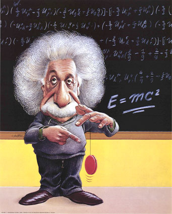

|
"I have
never, in all my life, not for one moment, been tempted toward religion of any
kind. The fact is that I feel no spiritual void. I have my philosophy of life,
which does not include any aspect of the supernatural and which I find totally
satisfying. I am, in short, a rationalist."
-- Isaac Asimov
Rationalism:
Rationalism
is an attitude that accepts the primacy of reason and aims at establishing a
system of philosophy and ethics verifiable by experience, independent of all
arbitrary assumptions of authority.
Rationalists
argue for a rational approach to human problems, suggest reasoned
alternatives to religious dogmas, defend freedom of thought and civil
liberties and strive for the secularization of politics, society and
educational system. Rationalists counter superstition, aim to promote an
open and just society, endorse scientific method and also recognize the
importance of emotions and imagination.
Moderator's call:
Rationalist Day
Celebration: Submitted
Articles
...
[<---- Click Here]

Reflections
on Mukto-Mona and Rationalism : By
Aparthib Zaman
|
|
I have had the privilege of
being an active member of Mukto-Mona since its
inception about a year ago. My own association
with it as a member was via rationalism, a
philosophy I uphold as the guiding principle of
my life and was also stated as an important
ideal in Mukto-Mona's statement of purpose
(Message #1). So on the occasion of the first
anniversary of Mukto-Mona as a forum upholding
rationalism, .... ....(Read
more) |
Scientific Mind and Building of a Society based on
Science oriented thought : By
Professor Ajoy K.
Roy
|
|
Now a days we talk much of
scientific mind or science oriented thought. In
BTV for a long time in a particular program the
comparer in his introductory remarks uttered
with all sincerity that object of his program is
to help building a society based on scientific
mind .... ....(Read
more) |
History of Science and Religion:
By
Syed Kamran mirza
|
 |
Again and again Islamists are
coming with the ‘cannons and guns’ of Islami
Science, if there is such a thing in this world
call ‘Religious Science.’ That is,
blind-folded Muslims attempt to claim that:
Islam brought science and modernity to this
world.I am a small person in this vast
scientific field, i.e.; I make my ends meet by
providing scientific knowledge to my employer in
an extremely narrow area. .... ....(Read
more) |
How
Neil Armstrong "became" a Muslim:
By Syed Kamran
Mirza
Postmodernism,
Hindu nationalism and `Vedic science'
By Meera Nanda
An
Indian Skeptic's explanation of miracles : By
Yuktibaadi
 |
Miracle is something done by
supernatural powers. Mysteires are "natural
phenomena" about which we do not know
anything. But we have been believing
"Mysteries" as miracles as we did not
know what was behind them.. ....(Read
more) |
Articles
on Rationalism:
 Why
I Am A Rationalist: by
Bertrand Russell Why
I Am A Rationalist: by
Bertrand Russell
A
Rationalist Looks at Death and Dying: by
Marjorie Mignacca
Some
Principles of Rationalism: by
Marjorie Mignacca Hujoor
Saidabadi: Montorey shontaan proshob [1] by
Prabir Ghosh
Hujoor
Saidabadi: Montorey shontaan proshob [2] by
Prabir Ghosh
SATYA
SAI BABA Retelling The Story by
Babu R.R. Gogineni
THE
MIRACLE OF GANGA WATER by Dr
Abraham Kovoor
Rebuttal
: Lincoln and Kennedy: Bound by coincidence Mukto-mona
Claiming
Allah in Science: Hijacking Mankind’s Real Glory??
by Jahed
Ahmed Folklore
in Qur’an-Who was Zul-Qarnain? by
Syed Kamran Mirza Quranic
Contradictions, Inconsistencies and Errors. by
Syed Kamran Mirza The
Gross Inanities In Islamic Myth! by
Syed Kamran Mirza An
Irreverent Look at Some of India's Most Revered Figures
By Aparthib Zaman


A
Refutation of the Design Argument for God
By Aparthib 
Postmodernism,
Hindu nationalism and `Vedic science'
By Meera Nanda
Remembering
Aroj Ali Matubbor - excerpts and quotes By Aparthib
Zaman

A
protest from Mukto-mona on Teresa's Miracle (Bangla)
Yuktibaadi's column in
Mukto-mona:
A Rational Human Being in
Mukto-mona:
 A
rebuttal to Maj. Gen. Abdul Wahab’s article on the incredible Miraj journey A
rebuttal to Maj. Gen. Abdul Wahab’s article on the incredible Miraj journey
A
rebuttal to “With a guide to Hajj” Part 1
Rationalist International in
Mukto-mona:
INDIAN
RATIONALISTS QUESTION MOTHER Teresa’s OVARIAN MIRACLE
INDIA:
SATI IS BACK!
Nigeria:
Flogging, amputations and more death-by-stoning sentences
BLASPHEMY
CASES IN PAKISTAN
India:
The truth about the Face-Scratcher
A
courageous atheist strikes back !
News:
Zafran Bi Bi
India:
Gujarat riots - communalization of state
Farewell
- Fairplay
Rationalist's challenge
Rationalist
James Randi's One Million Dollar Paranormal Challenge
Committee
for the Scientific Investigation of Claims of the Paranormal
THE
CHALLENGE OF DR. KOVOOR
NZARH
Offers "Sunshine" Guru $100,000
Ali Sina's challenge on
Scientific claim on Quran
|